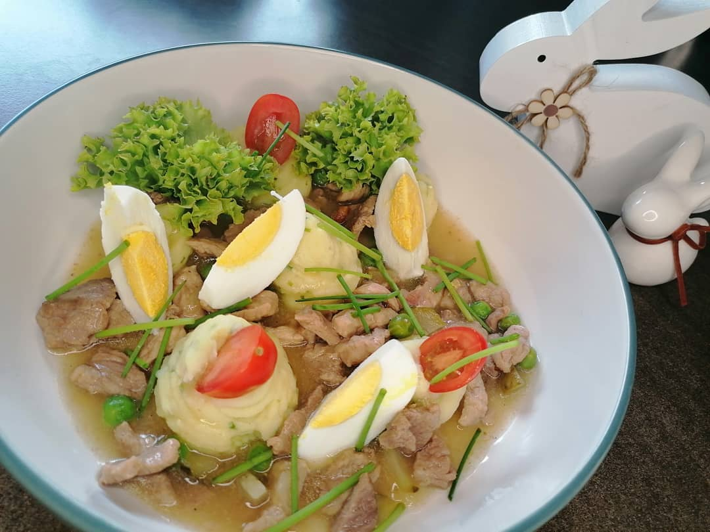

Bravčové mäso podľa @michal_food_style — Normy Jedál
Veľkonočné bravčové mäsko so zavaranými uhorkami, vareným vajíčkom a údenou slaninkou.
Doba prípravy 1.5 hodiny na 6 porcií.
Potrebujeme :
* 1kg bravčové pliecko
* 1ks cibuľa
* 1pl bravčová masť
* 2ks strúčik cesnaku
* mrazený hrášok
* 100g údená slanina
* 4ks zavárané uhorky
* 3ks uvarené vajíčka
* morská soľ
* čierne mleté korenie
* mletá rasca
* 1pl maslo
.
.
Postup :
1. Očistené mäso si nakrájame na tenké pásiky.
2. Do hrnca si dáme roztopiť domácu masť a pridáme nakrájanú cibuľu a slaninku.
3. Keď má cibuľa zlatistú farbu pridáme nakrájaný cesnak a spolu orestujeme.
4. Potom pridáme bravčové mäso čierne korenie, mletú rascu a všetko spolu orestujeme do hnedá z každej strany.
5. Podlejeme vývarom (vodou) a na miernom ohni dusíme asi 45 minút pokiaľ nám mäso nezmäkne.
6. Pred koncom pridáme na kocky nakrájané uhorky a hrášok.
7. Na záver dochutíme soľou a zahustíme zemiakovým škrobom. Pre lepšiu chuť pridáme 1pl masla.
#foodpics#foodideas #yumnyfood #yummy #instafood #instaphoto #glutenfree #glutenfreerecipes #bezlepku#bezlepkoverecepty #lahkerecepty #lunch #lunchideas
#obed #jedlo #uzasnejedlo #bravcovemaso